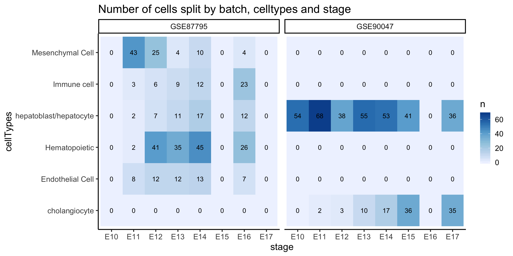
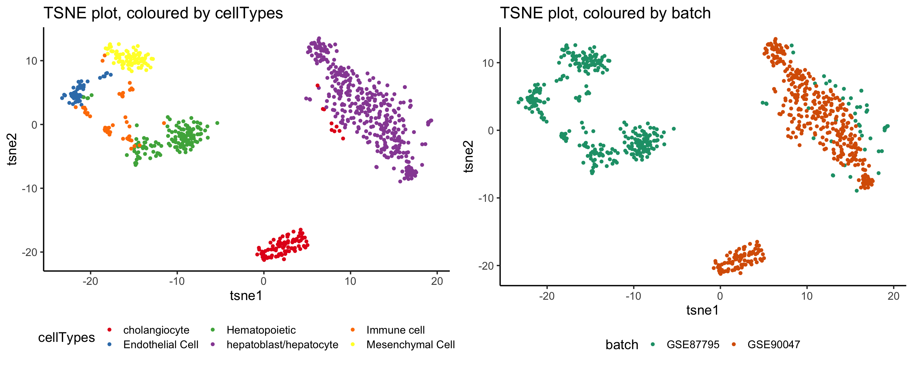
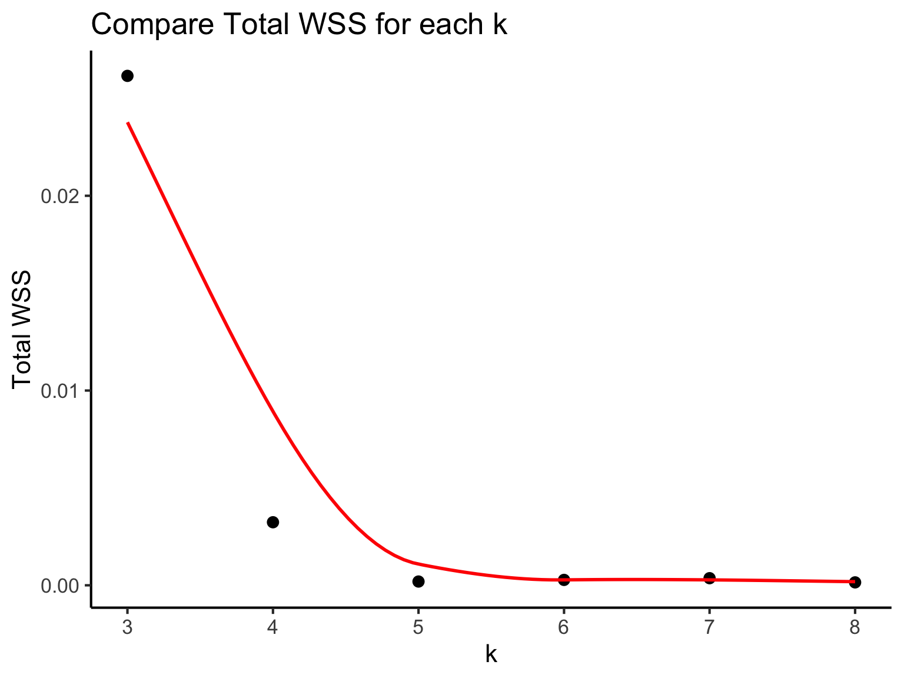
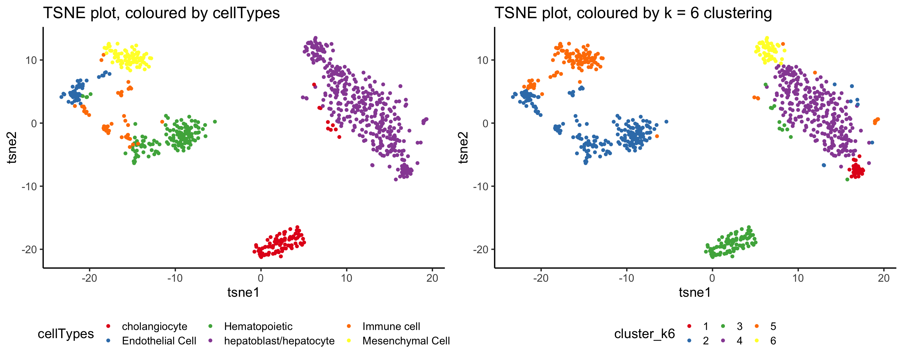
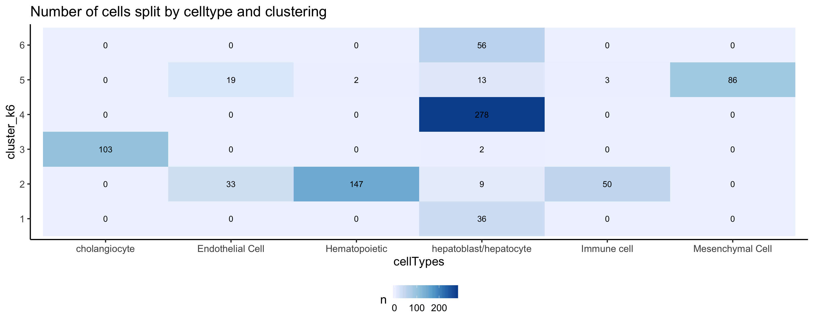
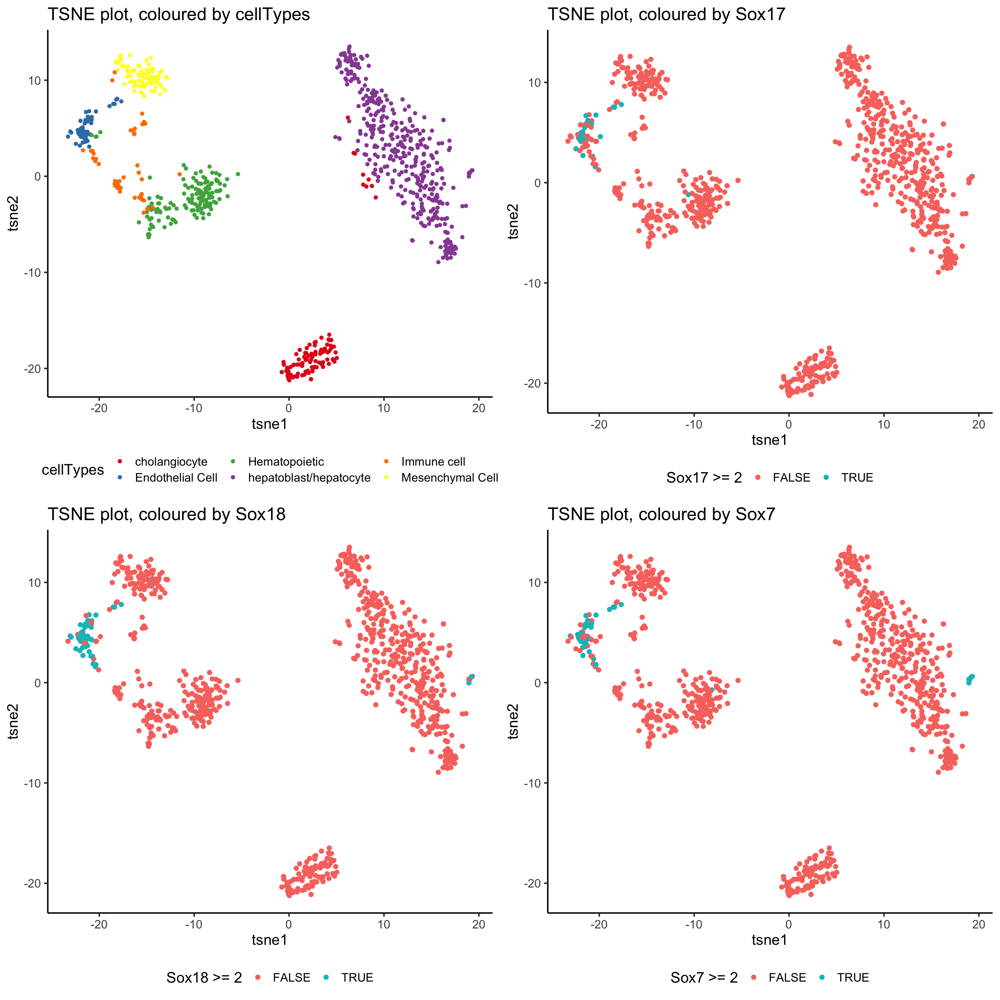

As discussed in 1st June 2019, Taiyun will work on the scClust component and Yingxin will work on the monocle component.
subset_data = sce_scMerge[,sce_scMerge$batch %in% c("GSE87795", "GSE90047")]
subset_matrix = SummarizedExperiment::assay(subset_data, "scMerge")
pca_scMerge_cellTypes = scater::plotPCA(subset_data,
colour_by = "cellTypes",
run_args = list(exprs_values = "scMerge")) +
scale_fill_brewer(palette = "Set1")
pca_scMerge_batch = scater::plotPCA(subset_data,
colour_by = "batch",
run_args = list(exprs_values = "scMerge")) +
scale_fill_brewer(palette = "Dark2")
grid.arrange(pca_scMerge_cellTypes, pca_scMerge_batch, nrow = 1)
Due to the random nature of the TSNE algorithm, we will save the TSNE coordinates first before continuing to overlay it with clustering information.
subset_data = scater::runTSNE(object = subset_data, exprs_values = "scMerge")
tsne_mat = subset_data@reducedDims@listData$TSNE
tsne_plotdf = data.frame(
tsne1 = tsne_mat[,1],
tsne2 = tsne_mat[,2],
cellTypes = subset_data$cellTypes,
batch = subset_data$batch) %>%
cbind(t(SummarizedExperiment::assay(subset_data, "scMerge")))
celltype_plot = ggplot(tsne_plotdf,
aes(x = tsne1, y = tsne2, colour = cellTypes)) +
geom_point() +
scale_colour_brewer(palette = "Set1") +
labs(title = "TSNE plot, coloured by cellTypes")
batch_plot = ggplot(tsne_plotdf,
aes(x = tsne1, y = tsne2, colour = batch)) +
geom_point() +
scale_colour_brewer(palette = "Dark2") +
labs(title = "TSNE plot, coloured by batch")
grid.arrange(celltype_plot, batch_plot, nrow = 1)
About 7 minutes
simlr_result_k6 = scdney::scClust(mat = subset_matrix, 6, similarity = "pearson", method = "simlr", seed = 1, cores.ratio = 0, geneFilter = 0)load(paste(getwd(), "/data/simlr.results.RData", sep = ""))kall_wss = sapply(simlr_results, function(result) {
sum(result$y$withinss)
}, USE.NAMES = TRUE, simplify = TRUE)
plot(x = names(all_wss), y = all_wss, main = "Total WSS for each k", xlab = "k", ylab = "total WSS")
simlr_result_k6 = simlr_results$`6`
tsne_plotdf = dplyr::mutate(
tsne_plotdf,
cluster_k6 = factor(simlr_result_k6$y$cluster))
k6Clust_plot = ggplot(tsne_plotdf,
aes(x = tsne1, y = tsne2, colour = cluster_k6)) +
geom_point() +
scale_colour_brewer(palette = "Set1") +
labs(title = "TSNE plot, coloured by k = 6 clustering")
grid.arrange(celltype_plot, k6Clust_plot, nrow = 1)
mclust::adjustedRandIndex(tsne_plotdf$cellTypes, simlr_result_k6$y$cluster)## [1] 0.5752176igraph::compare(as.numeric(factor(simlr_result_k6$y$cluster)), as.numeric(factor(tsne_plotdf$cellTypes)), method = "nmi")## [1] 0.6873722tsne_plotdf %>%
group_by(cellTypes, cluster_k6) %>%
dplyr::tally() %>%
ungroup() %>%
tidyr::complete(cellTypes, cluster_k6, fill = list(n = 0)) %>%
ggplot(aes(x = cellTypes, y = cluster_k6,
fill = n, label = n)) +
geom_tile() +
geom_text() +
scale_fill_distiller(palette = "Blues", direction = 1) +
# scale_fill_gradient2(low = "white", high = "#C10111") +
labs(title = "Number of cells split by celltype and clustering")
sox17_plot = ggplot(tsne_plotdf,
aes(x = tsne1, y = tsne2, colour = Sox17 >= 2)) +
geom_point(size = 2) +
labs(title = "TSNE plot, coloured by Sox17")
sox18_plot = ggplot(tsne_plotdf,
aes(x = tsne1, y = tsne2, colour = Sox18 >= 2)) +
geom_point(size = 2) +
labs(title = "TSNE plot, coloured by Sox18")
sox7_plot = ggplot(tsne_plotdf,
aes(x = tsne1, y = tsne2, colour = Sox7 >= 2)) +
geom_point(size = 2) +
labs(title = "TSNE plot, coloured by Sox7")
grid.arrange(celltype_plot, sox17_plot, sox18_plot, sox7_plot, nrow = 2)